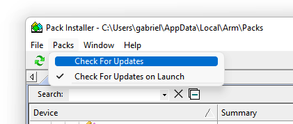

|
Arm-2D
2D Image Processing Library for Cortex-M Processors
|


|
|
Arm-2D
2D Image Processing Library for Cortex-M Processors
|
|
This document describes how to deploy the Arm-2D library to your existing MDK projects. If you are not familiar with Arm-2D, please start from the README first.
There are three methods to get Arm-2D:
Cloning the Arm-2D software repository on Github using the following command line:
Checking for Updates in pack-installer and installing the latest Arm-2D packs as shown in Figure 1-1 and Figure 1-2
Figure 1-1 Check for Updates in Pack Installer

Figure 1-2 Install the Arm-2D in Pack Installer

Arm-2D.Library/Source directory to the Arm-2d group of the project.For ease of use, please add ALL header files in the Library/Include directory that have no double-underscores-prefix in their name to the Arm-2d group of the project.
Figure 2-1 A typical project view after Arm-2D Is added

Add a search path to MDK project configuration for the Arm-2D header files as shown in Figure 2-2:
Figure 2-2 Add search path to the project configuration for Arm-2D header files

Enable C11 and GNU extension support in C/C++(AC6) configurations:
Figure 2-3 Enable "gnu11" in Arm Compiler 6

Arm-2D relies on CMSIS 5.7.0 and above (If you want to use Arm-2D with Cortex-M55, you need CMSIS 5.8.0). Please check the RTE configuration and ensure proper CMSIS support has been added to the project (as shown in Figure 2-4 the CORE and DSP are required).
Figure 2-4 Check the CMSIS support in the RTE configuration window

arm_2d_cfg.h in Library\Include\template to you application folder and set the include search path for this header file. You can find arm-2d configurations in this header file.arm_2d.h in your source code where you want to use the library:arm_2d_init() :Figure 2-5 A Typical Configuration for A MDK project

NOTE:
Open the Run-Time Environment configuration dialog using menu "Project->Manage->Run-Time Environment" as shown in Figure 2-6.
Figure 2-6 Open Run-Time Environment Dialog 
Expand Acceleration and select Core, Alpha-Blending and Transform under Arm-2D as shown below. Make sure you also select CMSIS-CORE and CMSIS-DSP.
Figure 2-7 Select Arm-2D in RTE 
Enable C11 and GNU extension support in C/C++(AC6) configurations:
Figure 2-3 Enable "gnu11" in Arm Compiler 6
Include the header file arm_2d.h in your source code where you want to use the library:
Initialize Arm-2D by calling function arm_2d_init() :
Expand Acceleration in the project view and open arm_2d_cfg.h as shown in Figure 2-8.
Figure 2-8 Find arm_2d_cfg.h in the project view 
Open the Configuration Wizard, you can see options available for Arm-2D
Figure 2-9 Configuration Wizard for Arm-2D

Table 3-1 Summary
| Projects | Description | Folder | Note |
|---|---|---|---|
| benchmark | It is an ALL-IN-ONE example that demonstrates almost all features provided by Arm-2D. By setting different PFB sizes, you can evaluate the 2D image processing capability for the target system. | examples/benchmark | Can be used as benchmark. |
| watch_panel | It is a dedicated example of a smart-watch-like panel. A pointer and two gears rotate at different angular velocities on a translucent watch panel with a dynamic background. | examples/watch_panel | Can be used as benchmark |
| [template][bare-metal][pfb] | It is a project template for the bare-metal environment. | examples/[template][bare-metal][pfb] | Project Template |
| [template][cmsis-rtos2][pfb] | It is a project template for the RTOS environment, which use CMSIS-RTO2 as an example to show how Arm-2D can work with an RTOS. | examples/[template][cmsis-rtos2][pfb] | Project Template |